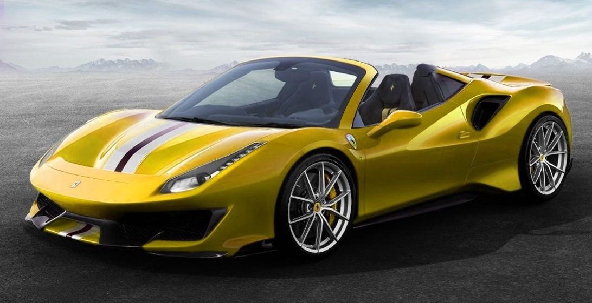
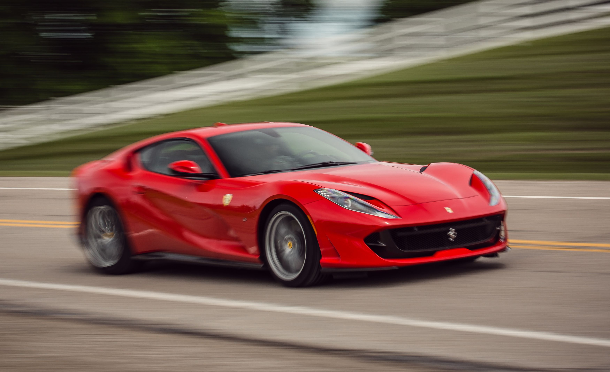

De maker van Ferrari is Enzo Ferrari. In 1923 begon hij als testcoureur voor alfa Romeo. Hij kreeg snel hierna verantwoordelijkheid over het hele alfa romeo team. Hij bleef heel lang bij alfa romeo. Tot 1939. Hier scheiden hun wegen. Tot 1945 had meneer Ferrari niet zoveel gedaan. Maar in 1945 had hij de eerste Ferrari ontworpen en in 1947 was zijn eerste Ferrari klaar. Het was de Ferrari 125 S. In 1950 werd F1 opericht. Hij was hier al meteen bij en in 1951 had hij zelfs een grote prijs gewonnen met zijn wagen. Hij is in de hele geschiedenis de enigste auto producent die heeft meegedaan aan een F1 race.

